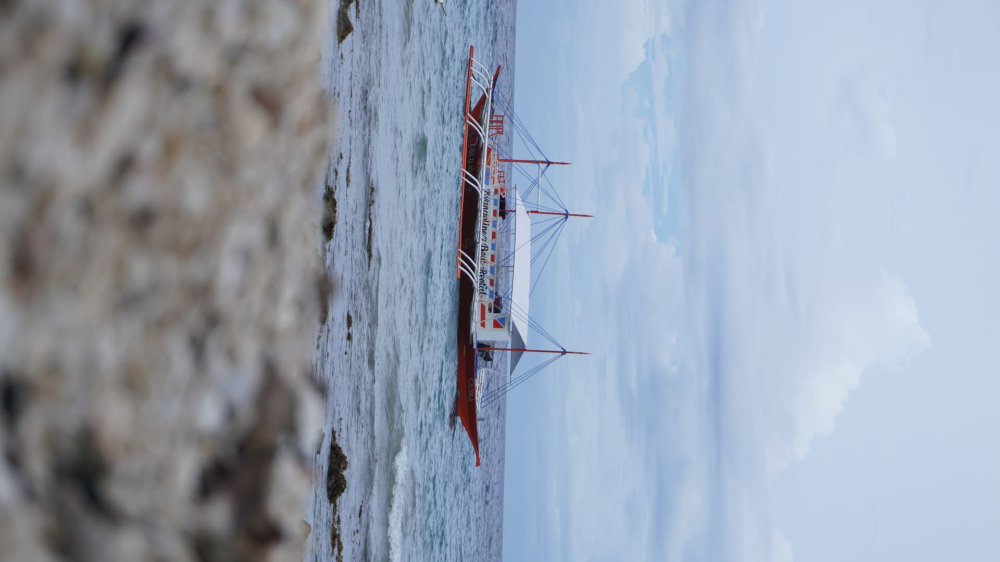
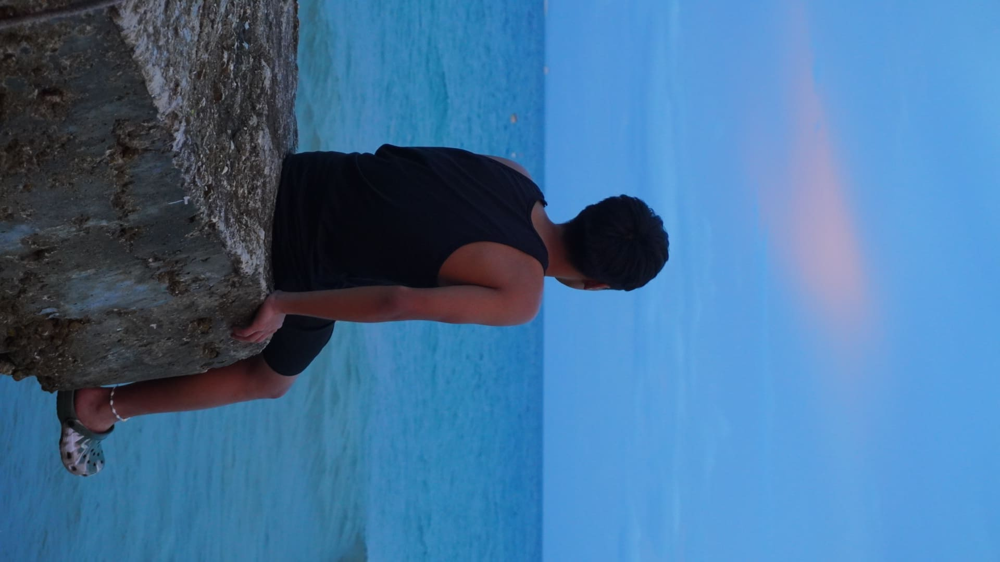
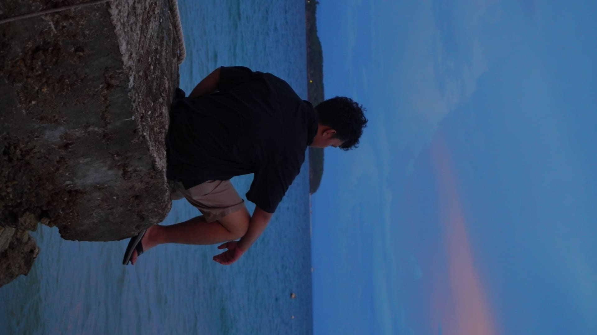
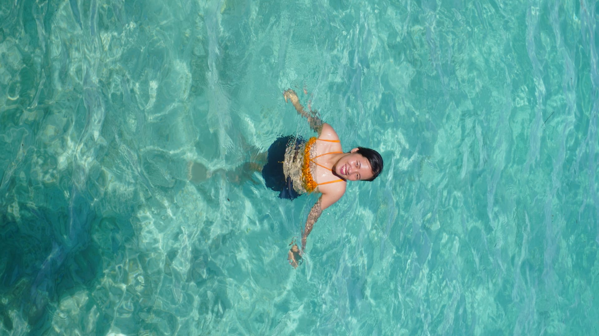
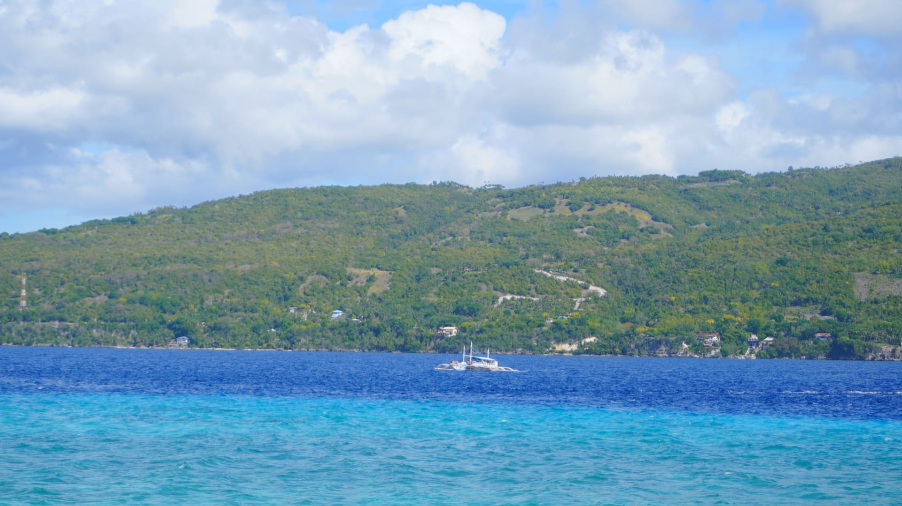

I'll be showing the trip I went to Cebu, This is all the photo I use to show you some example of my work. the camera I use is Sony ZV-E10 is good for beginner level of Photograhpy and Videography.

Water Fall pose Idea
This Photo is great for posting as myday or using as a profile.

Enjoying the fall
The rocky environment is useful for getting a few details in your photo.

The right spot for your subject
This photo will show the subject facing the waterfall like looking amazed by the waterfall.

Center subject
Making the focus on the middle and adding some environment in the photo.

Blue Sea
Adding the HUE color efefct make the sea a little blue.

Waving day
Testing out the low light on my ZV-E10.

Clear sea
Wondeful spot to get an arial view os the subject

Wide Angles View
The great sea of Cebu